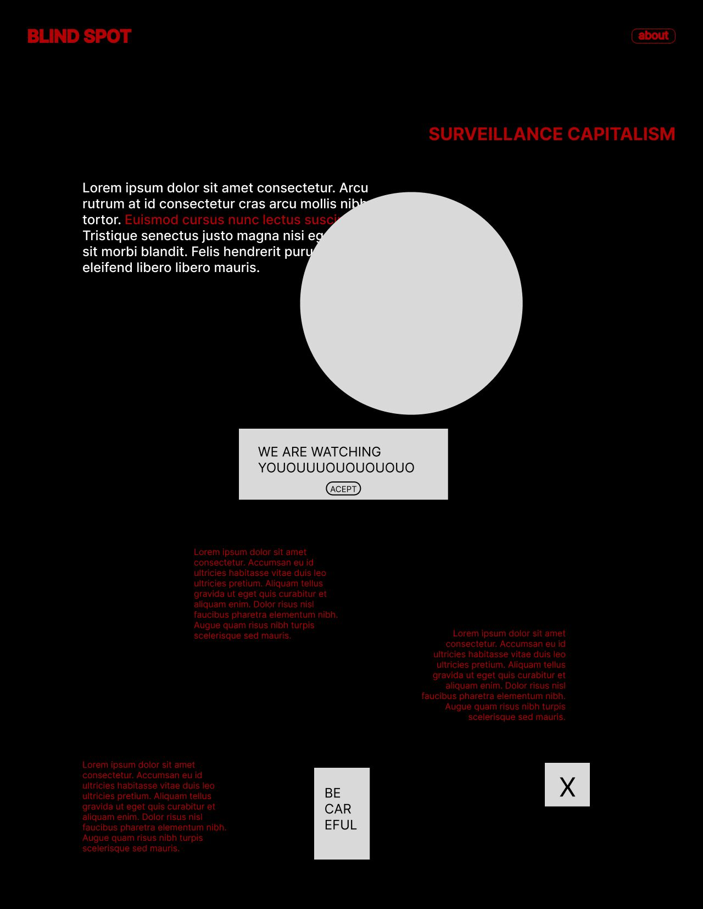

Overview
In the age of surveillance capitalism, the most valuable data grows in the shadows. Blind Spot is a critical design website that translates 12 concepts from Shoshana Zuboff’s The Age of Surveillance Capitalism (2018) into a digital experience — making visible what was designed to be invisible: the system of extraction, prediction, and behavioural control that underpins the internet we use every day.
The visual identity departs from absence: black background, red typography, maximum contrast. The site was built in Framer, with a navigation architecture designed to mirror the argument of the book itself.
A website that makes you perform the same act of unknowing it documents — revealing hidden meaning only when you decide to look.
① The Book
Shoshana Zuboff, 2018
The Age of Surveillance Capitalism is Zuboff’s account of how the digital economy transformed human experience into raw material — a commodity to be predicted, packaged, and sold. The book names 12 core mechanisms through which this system operates: from Behavioral Surplus to Big Other.
These are not abstract concepts. They describe the infrastructure behind every search, every click, every moment of hesitation recorded on a screen. Zuboff’s argument is that most people have never been told the names for what is happening to them — and that naming is the first step toward resistance.
② The Interaction
To see without being seen.
The central interaction decision mirrors the argument of the book. The titles of the 12 concepts are visible from the start — in red, against black — but their meaning and Zuboff’s excerpts only appear when the user hovers over them.
The content exists. It is visible. But it remains opaque until someone decides to look — exactly like the data extraction mechanisms the site documents.


The internal debate
The hover effect raised a real design question: was the friction a usability problem or a conceptual decision? We kept it. The difficulty of accessing meaning is part of the experience.
Before landing on this reveal, we tried a multiply blend mode, where the excerpt text already sat on the page and simply changed colour on hover. It felt like a colour trick rather than an act of uncovering, so we dropped it for a version where the text truly isn’t there until you go looking.
Early wireframes also explored adding content with nothing to do with the excerpts — a fake cookie banner, a “be careful” warning — as pure distraction, mimicking the noise real surveillance interfaces bury you in. We left those out of the final site; the hover-reveal carried the argument on its own.

The friction is the argument: making the content harder to reach mirrors what it feels like to live inside surveillance capitalism. Usability and conceptual integrity pulled in opposite directions here, and we chose the concept.
③ My Contribution
Building the site in Framer
In this group project, I was responsible for the full technical construction of the site in Framer: implementing the hover reveal interaction, building the navigation architecture between the 12 interconnected concepts, and designing the full interaction logic.
④ Reflections
Blind Spot was the first project where I had to resolve a genuine conflict between design clarity and design argument. Every interaction design principle points toward reducing friction. Here, friction was the point.
The project also introduced me to critical design as a practice. The idea that a website can be an argument — that the way it behaves can carry a claim about the world, not just display information — is something I’ve carried into every web project since.
Explore how the site behaves on mobile — the hover mechanic is entirely inaccessible on touch screens, which creates an irony the project probably doesn’t intend.
© ellen damazio, 2026 — designed & coded